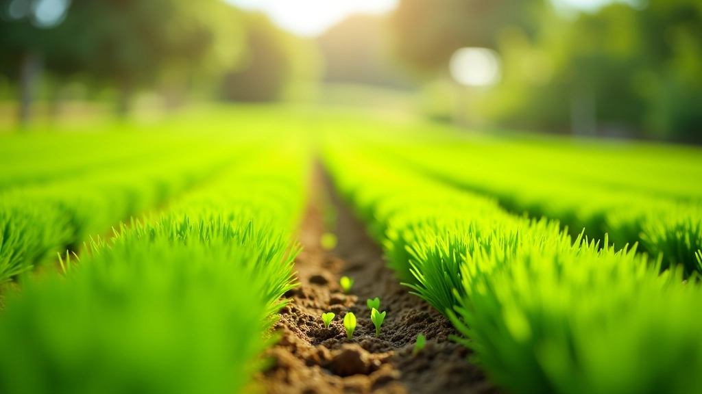
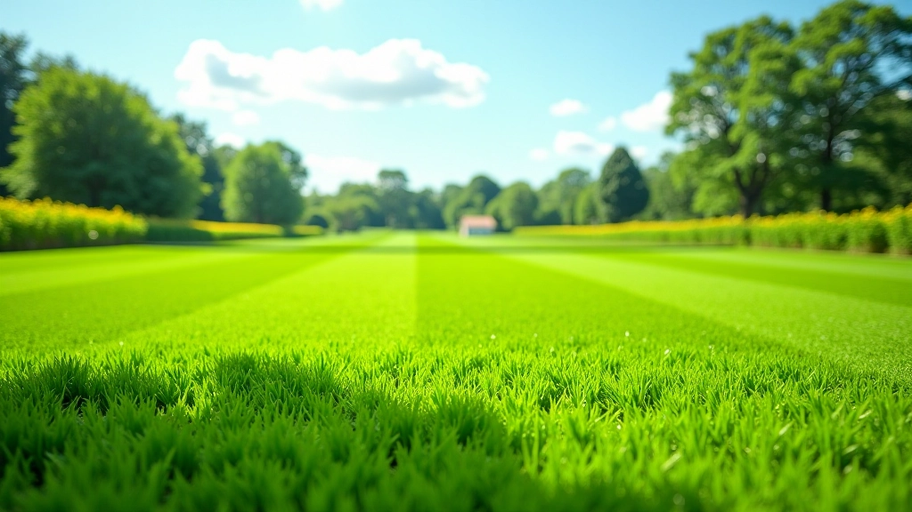
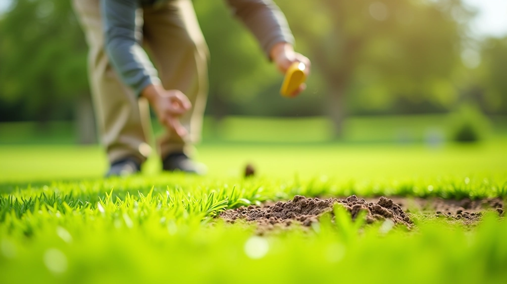
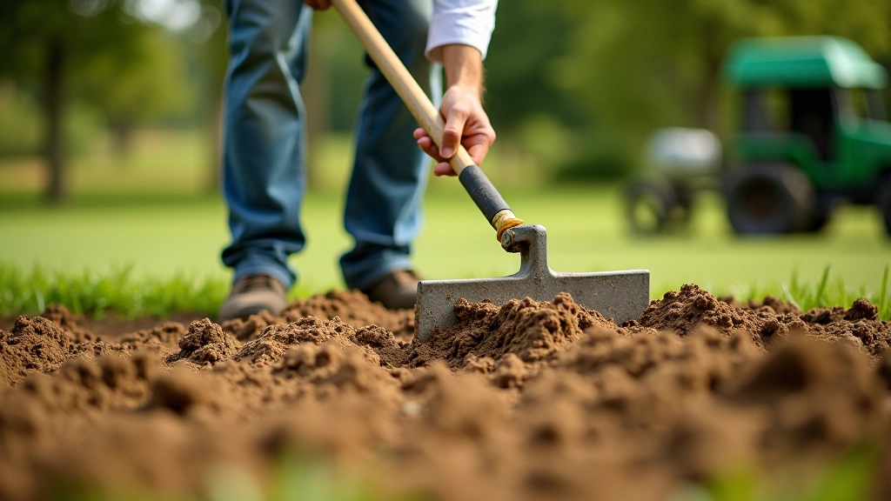
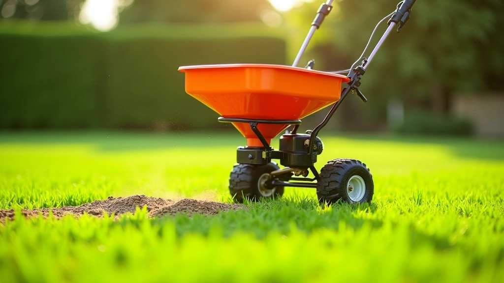
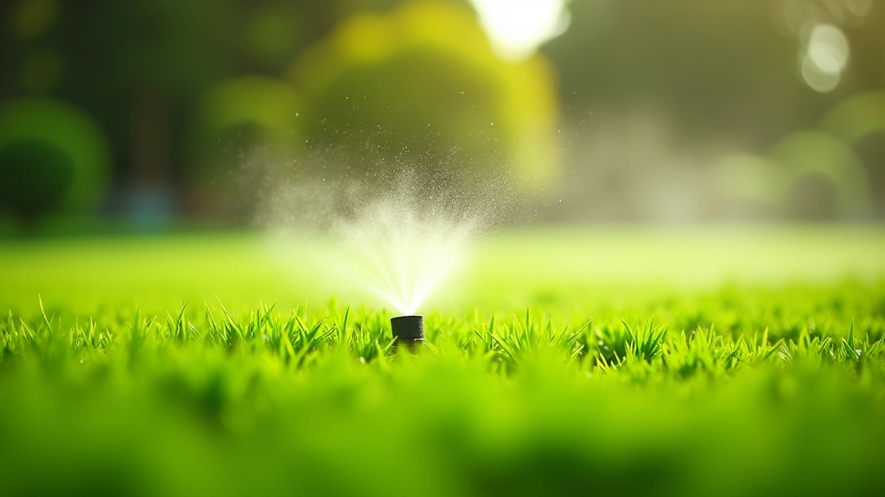

اختيار وزراعة العشب: من البذور إلى الملعب الأخضر
أصناف العشب المختلفة لها متطلبات مختلفة تماماً. في هذا الدليل، نشرح كيفية اختيار الصنف المناسب لمناخك وموسم الزراعة الأمثل والخطوات العملية من البذرة إلى الملعب الأخضر.

لماذا اختيار الصنف المناسب مهم جداً
الملاعب الخضراء الجيدة لا تحدث بالصدفة. كل ملعب كروكيه يحتاج إلى أساس قوي — وهذا الأساس يبدأ بالعشب الصحيح. نوع العشب الذي تختاره سيؤثر على كل شيء: كيف يستجيب للضغط، كم مرة ستحتاج إلى قصه، ومدى سرعة تعافيه من الاستخدام المكثف.
ليس كل عشب مناسب لملاعب الكروكيه. بعض الأصناف تنمو بسرعة لكنها ناعمة جداً، وبعضها الآخر قاسي وكثيف لكنه بطيء النمو. اختيارك الآن يعني فرقاً كبيراً بعد سنة أو سنتين من الاستخدام المنتظم.

الأصناف الرئيسية للعشب
كل صنف له شخصيته الخاصة. تعرف عليها قبل الاختيار.
العشب الناعم الدقيق
أصناف مثل البينسي جراس توفر ملمساً ناعماً جداً وألواناً أخضر عميق. تنمو ببطء نسبياً لكنها توفر سطحاً متساوياً ممتاز. مشكلتها أنها تتطلب صيانة مكثفة وقد تتأثر بالضغط الشديد.
العشب القاسي المتين
أصناف مثل بيرمودا جراس وزويسيا تتحمل الضغط والحرارة بشكل أفضل. تنمو بسرعة وتتعافى من الإصابات بسرعة. لكنها قد تكون أكثر خشونة وتتطلب قص متكرر.
الأصناف الهجينة
تم تطويرها لدمج أفضل ما في العشب الناعم والقاسي. توفر توازناً جيداً بين الملمس والمتانة. تتطلب معرفة أكثر بخصوص احتياجاتها المحددة.
مطابقة العشب مع مناخك
لا تختر صنفاً لأنه يبدو جميلاً — اختره لأنه سينمو في منطقتك. العشب في القاهرة يختلف عن العشب في الإسكندرية. درجات الحرارة والرطوبة والأمطار تلعب دوراً كبيراً جداً.
إذا كنت في منطقة حارة وجافة، تجنب الأصناف التي تفضل البرودة. ستحاول البقاء حية، لكنها لن تزدهر أبداً. الضغط المستمر يعني صيانة مرهقة وملعب ضعيف. اختر أصنافاً موطنها مناطق حارة مثل برمودا أو زويسيا.
للمناطق الأكثر اعتدالاً، يمكنك تجربة أصناف انتقالية تعمل بشكل جيد في الربيع والخريف.


التوقيت الصحيح للزراعة
التوقيت هو كل شيء. زراعة البذور في الموسم الخاطئ تعني نسبة إنبات منخفضة وبطء في النمو. لكل صنف موسم زراعة مثالي.
الأصناف الدافئة — مثل برمودا وزويسيا — تُزرع في الربيع عندما تبدأ درجات الحرارة في الارتفاع. عادة ما يكون هذا من مارس إلى مايو حسب منطقتك. التربة يجب أن تكون دافئة بما يكفي لتحفيز الإنبات.
الأصناف الباردة — مثل بينسي جراس — تفضل الخريف والربيع. درجات الحرارة المعتدلة تساعد على نمو قوي. تجنب الزراعة في منتصف الصيف أو في الشتاء القارس.

تحضير التربة قبل الزراعة
لا يمكنك فقط نثر البذور على الأرض وتأمل الأفضل. التربة الجيدة تصنع فرقاً ضخماً. اختبر التربة أولاً — تحقق من مستوى الحموضة والعناصر الغذائية. معظم أصناف العشب تفضل درجة حموضة بين 6.0 و 7.5.
أضف السماد العضوي أو مادة عضوية أخرى لتحسين هيكل التربة. هذا يساعد على احتفاظ التربة بالرطوبة والمغذيات. استخدم حوالي 2-3 بوصات من السماد العضوي وقم بخلطه في أعلى 4-6 بوصات من التربة.
تأكد من تسوية سطح التربة بشكل جيد. الارتفاعات والانخفاضات تعني مناطق رطبة جداً أو جافة جداً. سطح متساوي يعني نمو متساوي.


عملية البذر الصحيحة
استخدم معدل البذر الموصى به لصنفك. إذا كنت تبذر قليلاً جداً، ستحصل على نبات خفيف وفقر. إذا كنت تبذر كثيراً جداً، ستنافس البذور بعضها على الموارد والنتيجة ستكون ضعيفة. اقرأ عبوة البذور بعناية.
استخدم بذاراً يدوياً أو آلياً لتوزيع البذور بشكل متساوي. البذر اليدوي يعني نتائج غير متسقة — بعض الأماكن ستكون كثيفة والأخرى خفيفة. إذا كنت تغطي منطقة كبيرة، استثمر في بذارة احترافية.
بعد البذر، غطِّ البذور بخفة بتربة معقمة أو رمل ناعم. البذور تحتاج إلى ملامسة التربة لكنها لا تحتاج إلى أن تكون مدفونة بعمق. نصف بوصة كافية.
الري المبكر والعناية بالنمو
البذور تحتاج إلى بيئة رطبة باستمرار لتنبت. هذا لا يعني مشبعة — الماء الراكد سيسبب تعفناً. رطبة فقط. رش خفيف مرتين إلى ثلاث مرات يومياً لأول أسبوعين.
بعد أن تنبت البذور وتظهر أول أوراق صغيرة، قلل تدريجياً من تكرار الري. الهدف هو تشجيع جذور عميقة. الري العميق الأقل تكراراً أفضل من الرش السطحي المتكرر. بحلول الأسبوع الثالث أو الرابع، يجب أن تتحول إلى جدول ري طبيعي.
كن حذراً من الجفاف والفيضانات. كلاهما يقتل الشتلات الصغيرة. افحص التربة بإصبعك — إذا كانت جافة أكثر من بوصة واحدة تحت السطح، فقد حان وقت الري.

ملاحظة مهمة
هذا المقال معلومات عامة لأغراض تعليمية فقط. الظروف المحلية تختلف بشكل كبير، وقد تحتاج إلى استشارة متخصص في تربية الأعشاب أو خدمات امتداد المقاطعة المحلية لتوصيات محددة لموقعك.
الخطوات التالية
اختيار وزراعة العشب الصحيح هو استثمار في مستقبل ملعبك. استغرق وقتك لاختيار الصنف المناسب، وتحضير التربة جيداً، واتبع جدول الري بعناية. الملعب الأخضر الصحي لا يحدث في الليل — إنه يحدث خلال الأسابيع والأشهر الأولى من الاهتمام الصحيح.
بعد أن تستقر نباتاتك، ستنتقل إلى مرحلة الصيانة. هذا هو المكان الذي تتعلم فيه عن التسميد والقص والتعامل مع المشاكل. لكن كل ذلك يبدأ هنا — بالبذرة الصحيحة والبيئة الصحيحة.
هل تريد معرفة المزيد عن صيانة ملعبك بعد أن ينمو؟
اقرأ دليل الصيانة الموسمية